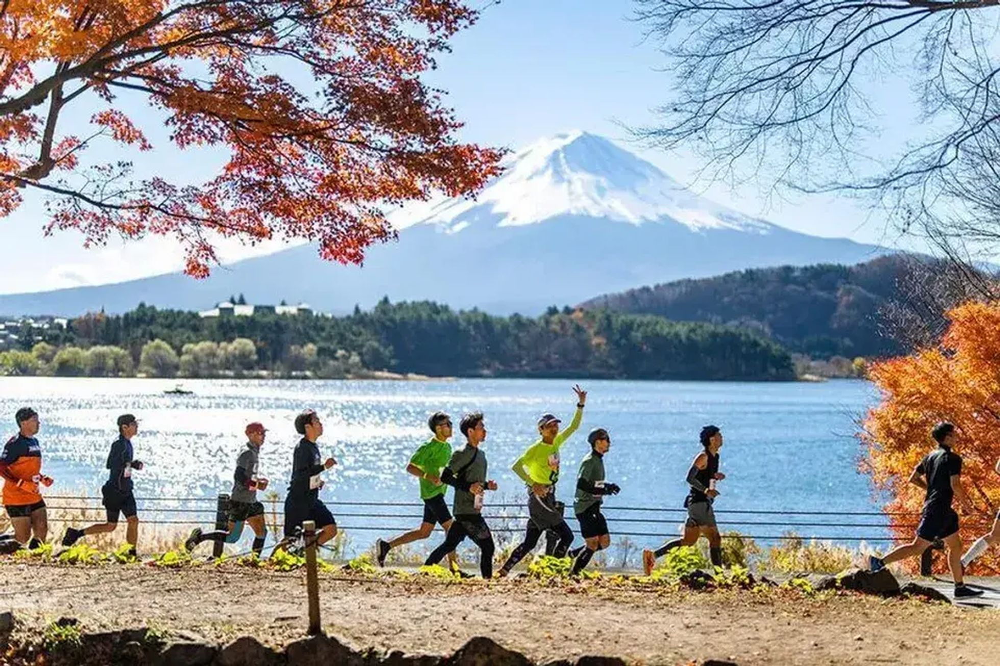
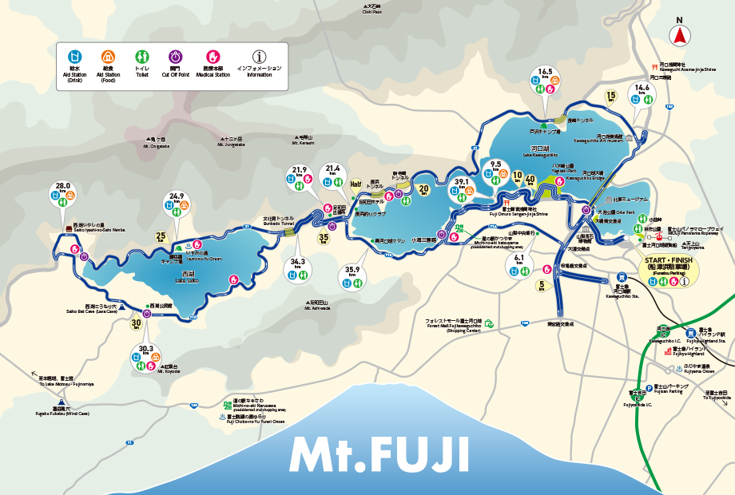
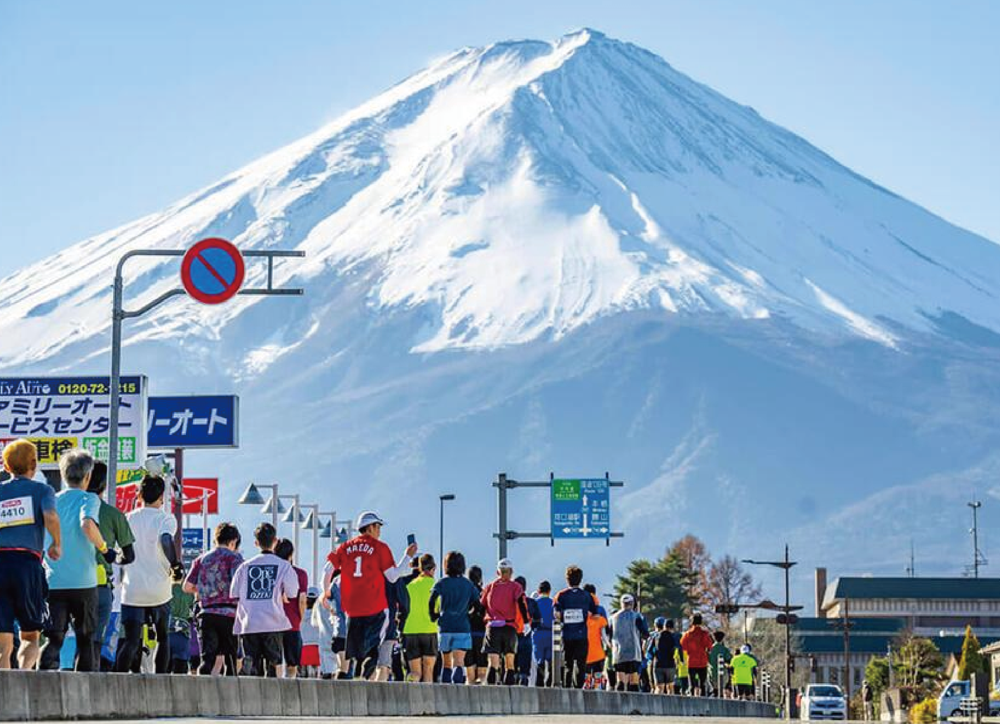

🗻 賽事名片與封面
富士山馬拉松 (Mt. Fuji International Marathon)
奔馳於河口湖與西湖雙湖畔，遠眺白雪冠頂富士聖山與楓紅倒影
🏃 賽事基本定位
世界文化遺產
- 賽事前身：創辦於 1976 年的「河口湖馬拉松」，2012 年正式擴大轉型
- 聖山遺產：2013 年 UNESCO 登錄世界文化遺產「信仰的對象與藝術的源泉」
- 地理環境：日本山梨縣富士五湖精華區（環繞河口湖與西湖雙湖畔）
- 兩日嘉年華：2026 第 15 屆首度升級兩日賽制，分日舉行絕景跑與全馬賽事
- 絕景指標：大石公園眺望經典「逆富士」倒影與 1.5 公里楓葉迴廊橘紅秋色
世界文化遺產
雙湖賽道
逆富士絕景
UNESCO 世界文化遺產 ｜ 日本最具代表性的景觀聖山馬拉松
🌍 跑旅核心精神
初冬楓紅
- 聖山巡禮：在初冬冷冽澄澈的空氣中，抬頭仰望白雪覆頂的富士山神聖英姿
- 激坂考驗：21 公里處直面約 1.5 公里連續陡升「心碎坡」，征服西湖秘境
- 溫泉舒緩：賽後漫步河口湖溫泉街，享用山梨熱呼呼鄉土麵「餺飥（Hoto）」
- 多元組別：全馬（6 小時）、環湖組 17K（3 小時）、慈善跑 10.5K 與絕景跑 4K/8K
雙湖環抱聖山倒影 ｜ 兼具極致湖畔美景與 21km 激坂心碎坡挑戰

🗻
富士聖山與河口湖逆富士
圖片路徑：images/fuji_01.jpg
圖 1：河口湖大石公園 ｜ 跑者遠眺白雪冠頂的富士山與湖面倒影「逆富士」
📋 賽事基本資訊
競賽規程與規格矩陣
11 月底深秋初冬開跑，雙湖環繞賽道與 6 小時全馬關門限時
⏱️ 舉辦時程與組別
兩日嘉年華
- 舉辦時間：每年 11 月下旬至 12 月初（深秋楓紅交替初冬時節）
- 全程馬拉松：42.195 km，時間限制 6 小時（主賽事日週日）
- 環湖組 17K：時間限制 3 小時，沿河口湖平緩賽道，適中級跑者
- 慈善跑 10.5K：時間限制 2 小時，聚焦河口湖周邊景觀與公益回饋
- 富士山絕景跑：4K / 8K（賽前一日週六），無競速限制，適合親子
全馬限時 6 小時
環湖組 17K
⛰️ 垂直爬升與海拔
激坂心碎坡
- 河口湖段（0~20 km）：海拔約 830 公尺，沿湖起伏小，平緩好配速
- 心碎坡（20~23 km）：21 km 處面臨連續陡升「心碎坡」，高差顯著
- 西湖環湖（23~35 km）：海拔約 900 公尺，氣溫低 1°C~2°C，風寒明顯
- 回程下坡（35~42 km）：西湖下坡返回河口湖，注意膝蓋與股四頭肌負荷
- 終點衝刺：最後 5 公里進入河口湖溫泉街與大橋，觀眾熱情加油
海拔 830-900m
21km 心碎坡
🍂 賽道地貌與補給
山梨特產
- 路面狀況：全程為平整乾淨瀝青柏油公路，路況極佳無泥地碎石
- 特產補給：產地直送高級麝香葡萄、新鮮時令水果與沖繩黑糖麵包
- 熱能暖湯：低溫賽道後段提供熱呼呼的日式味噌湯與日式點心補糖
- 景觀地標：途經楓葉迴廊、大石公園、西湖里根場與河口湖大橋
- 攝影熱點：北岸步道與湖畔大橋為拍攝富士山最佳視角，吸引跑者留影
麝香葡萄
熱味噌湯補給
📝 報名管道與物資
先著順制
- 海外先著順：官網每年春夏開放海外跑者名額，先到先得額滿為止
- 保證套裝：合作平台（如 AsiaYo）提供「名額 + 住宿 + 接駁巴士」套裝
- 新宿領物點：賽前數日於東京新宿旗艦店（Alpen TOKYO）提早領物
- 會場領取：賽前一日及賽晨於河口湖主會場設有物資領取帳篷
- 晶片計時：號碼布晶片感應，全馬完賽獲特製立體富士山造型獎牌
先到先得
新宿提早領物
⚡ 賽道結構與魔王路段
21 公里心碎坡（激坂）與西湖風寒挑戰
突破約 1.5 公里連續高差陡坡，頂住西湖低溫風寒與回程長下坡
🗺️ 賽道分段結構剖析
全馬 42.195 km
- 河口湖晨跑（0~20 km）：沿湖岸平緩展開，大石公園欣賞聖山「逆富士」倒影
- 心碎坡攻堅（20~23 km）：由河口湖切入西湖，1.5 公里急遽陡升，全線最大難關
- 西湖幽靜環線（23~35 km）：海拔較高人煙稀少，湖風強勁風寒顯著，考驗意志力
- 重返河口湖下坡（35~38 km）：急下坡考驗股四頭肌，控制步頻避免膝關節過載
- 溫泉街最後衝刺（39~42.195 km）：跨越河口湖大橋，穿越楓紅溫泉街直抵終點
飽覽富士五湖雙湖水色 ｜ 克服心碎坡激坂的心理與體能雙重考驗
🛑 魔王路段：21 km 心碎坡與西湖低溫
爬坡與風寒
- 心碎坡（激坂）：短距離連續陡升，嚴禁盲目加速硬衝，縮小步幅調勻呼吸節奏
- 西湖低溫風寒：西湖氣溫較河口湖低 1°C~2°C 且無遮蔽，出汗後極易遭遇失溫風險
- 下坡離心防護：由西湖下切回河口湖的長下坡，肌肉疲勞下易抽筋，步幅微收穩踩
- 關門時間意識：全馬限時 6 小時，心碎坡頂點與西湖各檢查點需保留 15~20 分鐘餘裕
心碎坡主動縮短步幅 ｜ 西湖段戴上防風手套與頭帶防止失溫

🍁
心碎坡激坂與紅葉迴廊
圖片路徑：images/fuji_02.jpg
圖 2：西湖連接段心碎坡 ｜ 跑者克服 21 公里激坂陡坡穿越楓紅掩映的林道
🎟️ 報名資格與搶票攻略
先著順名額、保證套裝與新宿領物
官方海外名額先到先得，新宿提早領物與河口湖住宿整合套裝
🌐 官方海外先著順報名
先到先得
- 報名方式：透過富士山馬拉松官方英文/繁中報名網頁登錄
- 先著順機制：採先到先得原則，不需抽籤，額滿立即關閉報名
- 開放時程：通常於每年 5 月至 6 月正式開放海外跑者申請
- 組別選擇：全馬 42.195K、環湖組 17K、慈善跑 10.5K、絕景跑 4K/8K
- 費用包含：號碼布、計時晶片、原創紀念 T 恤與富士山造型獎牌
海外先著順
無須抽籤
🏨 合作平台保證套裝
機酒接駁
- 平台合作：AsiaYo 等海外跑旅機構提供保證參賽名額整合套裝
- 整合方案：包含「保證名額 + 河口湖/東京飯店 + 專屬直達巴士」
- 解決住宿痛點：河口湖賽事週末飯店極難預訂，套裝確保優質住宿
- 免煩惱交通：免除自行搶購富士急行鐵道或高速巴士車票的困擾
- 適合對象：首次造訪富士五湖、攜帶眷屬同行或希望無憂參賽者
保證參賽權
專屬巴士接送
📦 新宿 Alpen 提早領物
東京領取
- 新宿領取點：賽前 3 至 4 天於東京新宿 Alpen TOKYO 旗艦店設置
- 海外跑者便利：抵達東京後可直接在新宿領取號碼布與計時晶片
- 避免會場擁擠：在新宿提前領物後，賽事當天抵達河口湖免排隊
- 必備憑證：出示官方確認信 Email（QR Code）與個人護照正本
- 裝備補齊：旗艦店現場可採購補給能量膠、防寒手套、耳罩與防磨膏
Alpen TOKYO
賽前東京領物
🎪 河口湖大會會場領物
主會場報到
- 會場地點：河口湖大池公園（主會場 Event Plaza）
- 領物時間：週六 13:00~19:00 及賽事當晨（週日）07:00~08:30
- 嘉年華活動：週六設有運動攤位、富士山特色紀念品與舞台活動
- 物資領取：領取號碼布、計時晶片、賽事手冊與專用寄物袋
- 提醒事項：賽晨領物人潮眾多，強烈建議於新宿或週六提早完成
大池公園會場
建議提早報到
🚗 交通住宿與領物寄物
東京直達交通、溫泉飯店與起終點物流
新宿高速巴士與富士回遊列車，河口湖住宿熱區與大會寄物袋
🚆 東京前往河口湖三大交通
直達攻略
- 高速巴士：新宿轉運站（Busta Shinjuku）直達河口湖站，車程約 2.5 小時
- 特急「富士回遊」：新宿直達河口湖免轉車特急列車，車程約 1 小時 55 分（全指定席）
- 一般鐵路：搭乘 JR 中央線至大月站，轉乘富士急行線直達河口湖站
- 塞車預警：賽事當天公路易塞車，強烈建議搭乘鐵路或賽前一天抵達
- 大會接駁車：大會於富士急樂園及北麓停車場設有免費接駁專車
富士回遊特急需提早 1 個月搶票 ｜ 建議賽前一天進駐
♨️ 河口湖住宿區域推薦
溫泉度假
- 河口湖溫泉街：緊鄰終點會場與溫泉，賽後泡湯最享受，需提早半年預訂
- 富士急樂園周邊：商務飯店林立，有大會接駁巴士直達河口湖主會場
- 富士吉田市區：生活機能便利，搭乘富士急行線電車數站直達河口湖
- 湖畔景觀名宿：秀峰閣湖月、湖山亭等名宿直面富士山逆富士，極致享受
- 早餐應對：賽晨 06:00 起床，提前確認飯店提早早餐或前晚備妥飯糰
賽後享受富士山露天溫泉 ｜ 舒緩長跑肌肉疲倦
📦 終點寄物與賽後動線
會場動線
- 專用寄物袋：領物時發放官方專用透明寄物袋，黏貼號碼貼紙於指定區域
- 起點寄物區：主會場大池公園設有大型寄物帳篷，開賽前 45 分鐘截止收件
- 隨身禦寒：寄物完成後至起跑前，身著拋棄式透明雨衣於分區防寒
- 完賽領取：衝線領取完賽獎牌、運動飲料後，依指引迅速領取寄物袋
- 更衣帳篷：會場設有男女更衣帳篷，完賽後立即換穿羽絨外套防止著涼
起跑與終點同在河口湖 ｜ 賽後迅速更換厚保暖衣物
🎒 跑步裝備、補給與氣候應變
初冬低溫防寒、洋蔥穿搭與特色補給
應對清晨 -4°C 至中午 10°C 溫差，輕量公路鞋與麝香葡萄味噌湯
❄️ 初冬氣候與防寒穿搭
零下低溫
- 嚴峻溫差：清晨氣溫常驟降至 -4°C 至 2°C，中午陽光下回升至 8°C~12°C
- 起跑前禦寒：必備拋棄式透明雨衣或舊外套防寒，起跑後投入回收箱
- 末梢保暖：低溫下肢端容易凍僵，配戴輕量薄手套與防風耳罩保護耳朵
- 核心穿著：透氣長袖壓縮排汗衣或短袖搭配袖套，隨氣溫靈活調節
- 西湖風寒防護：西湖段風大溫低，保持手套與頭部保暖防止體溫流失
清晨零下低溫 ｜ 拋棄式雨衣、手套與耳罩為必備三件套
👟 跑鞋挑選與激坂應對
公路競速
- 跑鞋選擇：全程為平整瀝青柏油路，穿著標準公路競速跑鞋或碳板鞋即可
- 無須越野鞋：全線無碎石泥地，輕量透氣的公路鞋能大幅降低雙腿負擔
- 爬坡步頻調整：21 km 心碎坡爬升時，縮小步幅提高步頻，切忌大步硬蹬
- 下坡膝蓋保護：西湖返回河口湖的長下坡，重心微前傾，避免腳跟重煞
- 防磨膏配置：初冬乾燥氣候易摩擦，腳趾與大腿內側塗抹防磨膏防起泡
標準公路競速鞋 ｜ 心碎坡小碎步推蹬以保護股四頭肌
🍇 山梨特產補給與能量
熱味噌湯
- 麝香葡萄直送：水站提供山梨縣產頂級麝香葡萄與新鮮香蕉補充維生素
- 熱味噌湯暖身：後段補給站提供熱騰騰日式味噌湯與黑糖麵包，驅散寒意
- 自備能量膠：建議自備 4~5 包能量膠，每 45 分鐘定期補充維持血糖濃度
- 定時小口補水：低溫乾燥下容易忘記喝水，每個水站小口啜飲電解質飲料
- 完賽紀念勳章：衝線後領取特製立體富士山造型完賽獎牌與完賽毛巾
麝香葡萄與熱味噌湯 ｜ 頂級日式暖心賽道補給
🗺️ 賽後觀光與跳轉導航
富士五湖深度遊與 12 場全覽完結
富士山景觀纜車、楓葉迴廊、餺飥鄉土麵與回到總首頁索引
🌟 河口湖周邊名勝與美食
聖山觀光
- 天上山全景纜車：搭乘纜車登頂，俯瞰河口湖與富士山 180 度壯麗全景
- 河口湖楓葉迴廊：漫步 1.5 公里楓樹隧道，夜間點燈與白雪富士山相映成趣
- 忍野八海清泉：探訪富士山融雪伏流水湧泉，品嚐清涼甘甜泉水與草餅
- 鄉土料理「餺飥（Hoto）」：賽後必吃熱騰騰南瓜味噌燉粗麵，徹底溫暖身心
楓葉迴廊橘紅秋色 ｜ 露天風呂遠眺聖山享用餺飥名物
🧭 賽事跳轉導航
12 場全滿貫完結
- 完結篇回訪：恭喜完成 12 場世界必跑絕景馬拉松深度巡禮！
- 總首頁索引：點擊返回總首頁索引，查看四大主題分類與 12 場全覽矩陣
- 隨時探索：從總首頁隨時跳轉至任何一場夢幻海外跑旅賽事

🏅
富士山造型完賽獎牌
圖片路徑：images/fuji_03.png
圖 3：富士山造型完賽獎牌 ｜ 鑄刻聖山金黃光芒與河口湖雙湖榮耀印記